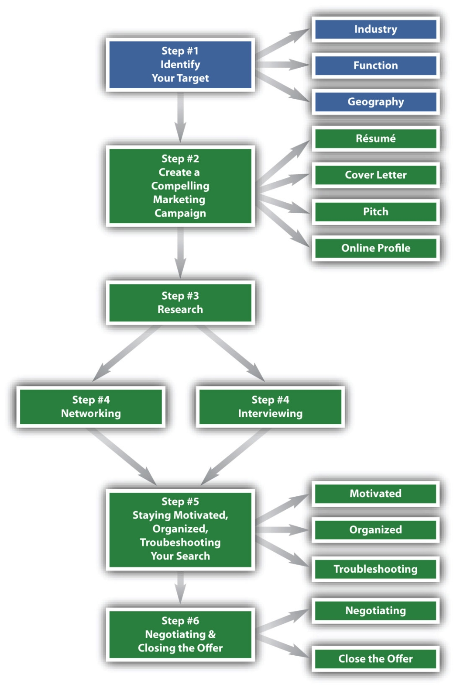
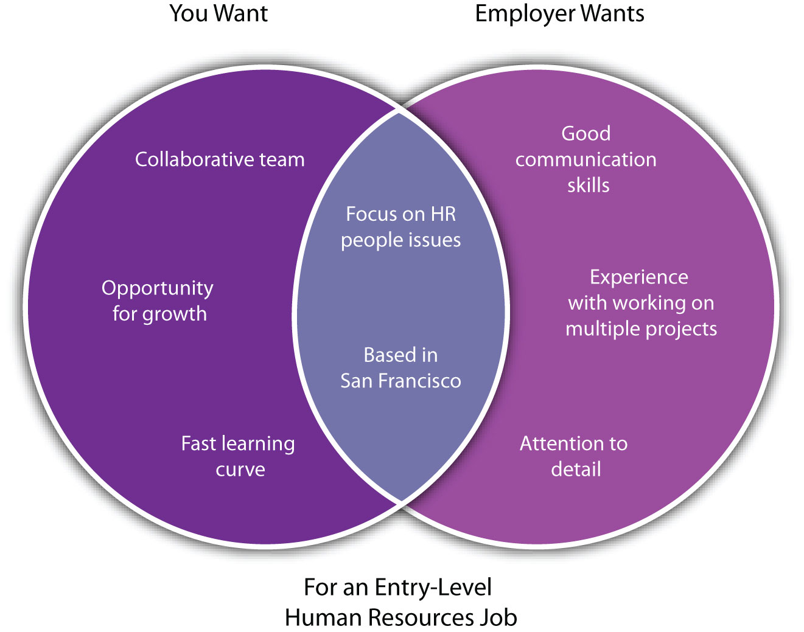

Figure 3.1 The Six-Step Job Search Process: Step 1
What Do We Mean by Job Search Targets?
If you think about achieving any goal (and finding a job definitely qualifies as a goal), the first step is to define the goal. What type of job do you want? Getting a job is a match between the employer who has the job opening and the employee who will be doing the job. Because two parties are involved in achieving this goal, there are two considerations in determining your job search targets:
This chapter talks about these two considerations and how you can find the overlap.
Because the employer will be defining the job and finding the right candidates for the job, it is important that you are able to understand the employer’s perspective on the job search:
When you know how the employer describes the job, you know how to search for it. When you know where the employer will look, you can position yourself to be there. When you know what the employer wants in the person who is hired, you can market yourself to reflect these characteristics.
At the same time, you probably don’t want just any job. You want a job for specific reasons. These reasons might be the following:
When you know what you want in your next job, you can search for these specific criteria. If your priority is to start on a specific career path, then you look for growth, advancement, learning, and mentorship in your next job. If you have specific financial obligations that you need to meet (e.g., student loans to repay, family to support, a relocation), then compensation is a main criteria. If you have a mission or legacy you wish to impart (e.g., to help a specific underserved community), then you will be looking at the mission of your next employer to see if it aligns with yours. If you value your relationships and day-to-day interactions with people, then you will be looking closely at who your boss and colleagues will be in your next job. These are just some examples, and people often have multiple considerations. You will want to look closely at your interests and values to determine overall what you want and how you might prioritize jobs that meet some but not all criteria.
Figure 3.2 A Visual Representation of the Intersection of Employer and Job Seeker Wants
This chapter covers both the employer’s and your considerations for possible jobs. We will be looking at the following considerations:
We will also be looking at the importance of having multiple job targets. Sometimes people romanticize the ideal job, making it sound like there is only one perfect job target. Perhaps you are waiting for a lightning bolt of inspiration to tell you what avenue to pursue. The idea of only one perfect job target is problematic for several reasons:
As a job seeker, there is a lot to do, and identifying your job targets is just the beginning. This chapter provides a structure and steps to move forward so that you don’t fall into the inertia of too many possibilities, the scarcity of too few possibilities, or the inflexibility of just one right answer.
If you glance at a job boardA place where jobs are posted. Most jobs boards are now online, such as Monster, Hotjobs, and Indeed. or classified ad section, you will see hundreds, if not thousands, of job possibilities. Even similar ads, such as job postings for accountants, can list very different descriptions for the job responsibilities, as well as qualifications to get the job. If you don’t have a structure to categorize this very broad job market, you will dilute your efforts wading through too many jobs that are of no interest to you or for which you are not qualified.

Instead, you need a structure that cuts across all of the jobs and is representative of how the employer thinks of the job (since the employer is the one advertising the job). This way, you know what job postings to research. For the searchable online job databases, you can filter specifically with the structure in mind. As you move through the six steps of the job search process, you can tailor each step to the target structure to ensure that you are always keeping the employer’s point of view at the heart of your search.
A well-defined job target includes three elements:
Continuing the example of accounting from the first section, accounting is a function. It is what the person in the job is doing. However, this accountant can be working for a government agency, for a hospital, for an insurance company, for a toy manufacturer, or for a host of other types of companies and organizations. Therefore, accounting is not specific enough—we also need to know the industry (whether government, health care, insurance, etc.). Finally, because people might relocate for a job, we also need to know the geography of our job targets. Are you looking at a specific city only, surrounding suburbs, surrounding cities, multiple states, or even multiple countries?
The industryThe type of business. you target is the type of business in which you want to work. Industries include the following examples:
These are just some examples, and they are of very broad industry categories. You can specify even further into subcategories. You will want to subcategorize because if you pick too broad an industry, you will have the same dilution-of-efforts problem as if you haven’t specified an industry at all.
If you look at the arts, subcategories include the following examples:
It is not enough to say, “I want a job in the arts.” Do you mean visual arts, as in painting or sculpting? Do you mean you’d like to work in a venue, such as a museum or a theater? Do you want to work for educational programs that focus on the arts? Do you want to work in support of artists—at a foundation that gives grants for creative projects, or at an artists’ union? Do you want to be in and around artists, selling or manufacturing art supplies? Finally, you can be in the arts and work for a nonprofit, a private company, or a government agency. Each of these sectors is very different.
In a later section of this chapter, we will give ideas for how to explore different industries and the different subcategories of your industry choices to see what might be right for you. In Chapter 6 on research, we will talk about how to research industries for specific organizations and company names and other information that will help you find the jobs you want. You can see already how useful it can be to focus on being specific. Being specific in describing the jobs you want is necessary to find where those jobs are.
Let’s take another example from the list so you can get more ideas on how to break an industry down. If you look at energy, the following subcategories are included:
If you are interested in energy, you could work for a private company that is involved in many types of energy and at many stages, from exploration to delivery. You could research energy-related issues for a nonprofit. You could be focused on regulations for a government agency. There are multiple, different possibilities for that single energy industry choice.
Finally, let’s look at sports as a possible interest. Perhaps you have been a longtime athlete or a diehard fan. Can you take a personal interest and make it into a career?
If you are interested in sports, you might focus on a specific team or sport and look at different organizations involved with that team. Or you might focus on sports in general—perhaps take on the mission of expanding the spectator base, increasing participation among youth, or determining the impact of sports on culture.
Here is a list of possible subcategories for common industries:
Table 3.1 List of Industry with Examples of Subcategories for Each
| Overall Industry | Subcategories |
|---|---|
| Arts |
|
| Education |
|
| Energy |
|
| Food |
|
| Fashion |
|
| Health care, pharmaceuticals, biotech |
|
| Hospitality and leisure |
|
| Financial services |
|
| Government |
|
| Legal |
|
| Luxury goods |
|
| Management consulting |
|
| Manufacturing |
|
| Media and entertainment |
|
| Nonprofit causes |
|
| Retail |
|
| Sports |
|
| Technology |
|
| Telecommunications |
|
| Transportation, aerospace, and automotive |
|
The functionDay-to-day role and responsibilities. of a job refers to your overall responsibility and what you are doing day to day. Examples of job functions follow:
In both of the industry examples for arts and energy, you could be doing many different things within any of the subcategories. If your industry choice leads you to an art museum as a possibility, you might do several things:
In a later section of this chapter, we will give ideas for how to explore different functional areas to see what might be right for you. In Chapter 6 on research, we will talk about how to research functions for information that will help you position yourself appropriately for these jobs. Function and industry build on each other. Knowing one but the not the other is incomplete.
Finally, even if you know what you are doing (function) and who you are doing it for (industry), you need to know where you’ll physically be. Geography is the third element of a well-defined target. How many potential art museums are located in your desired area? If your desired location has few or no art museums, then your search is unrealistic, and you have to expand your industry (to include other types of museums or other types of art-related organizations) or change your geography. If there are art museums in your desired location, but they are all small and do not need the fundraising skills you have, then you need to expand your function (do something else within the art museums) or change your geography. Geography gives you another critical point of focus for your job search.
Aside from physical location, some jobs have another type of geography consideration. You might be targeting a job whose customers, research subjects, or constituents are of a specific geography:
Your job interest may be related to a specific geography, and this definitely should factor in your search. You also must then factor in your physical location.
Having industry, function, and geography as filters for your job search is great because it translates to the employer’s perspective. The computer manufacturer in Austin is looking for a marketing manager. If your search targets technology manufacturing, Austin, and marketing, you will hear about that position.
But what if you haven’t narrowed down your search that specifically? You might just be getting started, and you know you want to live in Austin, but aren’t sure about anything else. The three elements are offered here to prevent you from picking up the local paper and blindly going through every ad. When we get to the research and networking chapters, you will also see how the three elements will enable you to find jobs that aren’t advertised. For example, by focusing on a specific industry, you can join a professional associationA membership group made up of people with a specific commonality in their work. For example, there are professional associations for real estate agents, investment advisers, teachers, and so forth. with people from that industry and learn about companies and potential jobs via the association.
There are good reasons to try to move toward identifying your job search targets by industry + function + geography. This section gives some ideas and exercises for you to move toward more specific choices for your three elements.
You want to think about how narrow your geographic range is: neighborhood, city, surrounding suburbs, multiple cities, multiple states, multiple countries. You may decide to launch a job search in several geographies, for example, New York City and Boston. But each geographic target (New York City or Boston) is treated as a separate job search.
Here are some considerations for your geography choice:
Here are some exercises and activities to help you make your choices:
Like geography, you may decide to target more than one industry, but each industry is treated as a separate job search. You also want to dig into each industry to see how you can get more specific on the subsectors of that industry.
One overall consideration is your sector of interest:
There are many examples of careers that include jobs across the sectors. Politicians currently in the government sector may have started their career as lawyers in the private sector or working for a nonprofit. Still, there are also people who very specifically want to target just one sector.
Private sectorAlso known as for-profit. Private sector companies exist to make a profit. companies are also called for-profit because they exist to make a profit. The focus of private companies and the measure of their success are their financial results. While individual companies are different, the private sector has been characterized as fast-paced (companies are vying for market leadership), money oriented (the focus on financial results), and business focused (to improve those financial results).
NonprofitAlso called not-for-profit. Nonprofit organizations do not exist to make money but rather to serve a specific mission or cause. organizations are also called not-for-profit because they don’t exist to make money but rather to serve a specific mission or cause. Again, while each organization is different, the nonprofit sector has been characterized as more slowly paced than the private sector (there are no market forces pressing a specific timetable), service oriented (the focus is on a mission or cause), and smaller in size (the largest nonprofits will not have as many employees or offices as the largest for-profits).
Government agencies can be at the municipal, state, or federal level. Government agencies and groups compose the public sectorRefers to government agencies and groups.. Their size and reach is going to depend on the level of government on which the agency focuses and the size and needs of the population, or constituents, it serves. Government jobs have historically been more stable than either private sector or nonprofit jobs, so they often appeal to people looking for that stable environment, though slower advancement. Government jobs may also be appealing if you are interested in service and politics.
Here are some questions to help you decide on a target sector or sectors:
To help you identify specific industry interests, you can do the following:
You can look at the list in section one and see if any of the industries mentioned stand out for you. Government and regulatory agencies also issue industry classifications (e.g., the North American Industry Classification System), and these lists can also give you ideas.
If seeing the names of industries isn’t enough because you are not sure what they do, reading general news and business media is a great way to learn more about different industries. You don’t have to read issues cover to cover, but go to a well-stocked magazine store or business library and read the table of contents for several issues of the major general news and business magazines. Which stories attract you? This gives a clue to industries of interest. You can also do a lot of this research online.
Examples of general business magazines that could be helpful for your industry research include the following:
Sometimes you have dream companies in mind because you use their product or service. Several magazines have various top lists (e.g., Largest Companies, Best Places to Work for Women, Most Innovative, Fastest Growing). Look at these lists, which are often broken out by industry, and see if you recognize and are interested in any of the companies.
What you do for fun is also a good indication of what you might like to do for your work. If you are interested in clothes and fashion trends, the fashion or retail industry is a possibility. If you like to travel, the hospitality and leisure industry (e.g., hotels, travel agencies) is a possibility.
To help you break down your overall industry into the subcategories, brainstorm all of the people and companies associated with that industry. Let’s say you are a fashionista:
Look at the providers of the things you buy and use. This will enable you to branch out of just fashion and actually itemize the specific subcategories.
The function of a job refers to your overall responsibility and what you are doing day-to-day. As you peruse the general news and business stories that interest you, what problem are they solving?
Your target function of interest solves a problem or fills a need. The problems covered in news and business stories can give you a window into the types of problems with which you may want to work.
You might also have a theme in your life of doing certain types of activities. Make a list of twenty-four experiences and achievements over your life that you are most proud of. Be specific—don’t just say “running,” but talk about a specific route or event. Now select your top twelve, then top six, and then top three. Look across your list, but particularly at your top three.
Your past accomplishments give a window into what you might want to focus on for your work. You will still need to translate this into actual job titles and descriptions. Look for people you know who are doing a job you might want to do—what are these jobs called? Look at job boards for these job titles and read the descriptions to compare with what you think you like about the job. Look at career information websites, such as Vault.com or Wetfeet.com, that describe different jobs.
A good example of using past experience to identify potential function targets is Vince P. Vince had two business-related degrees, including an MBA, and had held various positions in financial services, including finance and reporting, business development, and investor relations. When it came time to pick a function, Vince focused on manager jobs that he thought would reflect the diversity of his skills. The problem was that manager roles are notoriously not specific enough—what does it mean to say that you manage? Instead, Vince made a detailed list of his twenty-four achievements, and once he looked at the patterns in these he noticed an interest and talent in turning around crisis situations, raising money, and creating new operating procedures, including working with regulatory and compliance issues. He now positions himself, not just for management in general, but for managing crisis situations or new situations where processes need to be worked out. He has moved from a general manager to an operations and turnaround specialist.
Industry, function, and geography are helpful external criteria. When you look out into the market at the broad spectrum of jobs, having three elements to filter and narrow this down is critical. But you have other criteria important to you internally that are unrelated to a specific industry, function, or geography:
Being clear about the three elements will help you research, but understanding your internal criteria will help you select your next job. From the preceding, you can see three broad categories to consider:
An employer might be big or small, new or established, well branded, or unknown. These are all considerations that may or may not matter to you. Each has its pros and cons:
Table 3.2 Advantages and Disadvantages for a Sampling of Employer Characteristics
| Type of Employer | Advantages | Disadvantages |
|---|---|---|
| Big Company |
|
|
| Small Company |
|
|
| New Company |
|
|
| Old Company |
|
|
| Brand Name |
|
|
| Unknown Brand |
|
|
Of course, there are gradations between each of the preceding extremes. You need to decide which, if any, criteria matter to you and your priorities. For example, is a brand-name company more important to you than whether it’s big or small?
Compensation has many elements. Opportunity for advancement can be categorized with compensation because it is directly tied to compensation elements:
Some elements are more standard for certain jobs than others. Nonprofit and government jobs typically do not have any bonus components. You will want to find out what is customary in the sector, industry, and function you are considering, if a specific element of compensation is high on your list of priorities.
The range of offerings varies greatly from company to company and even within companies. One company in the same industry and for the same functional role may pay more or less and have a different compensation structure than another company in the same industry and function. Even within companies, there is variation because your compensation depends on the level of the job you are filling, as well as the skills and experience you are bringing to the job. Some roles have a lot of built-in variability. For example, sales roles may have a small defined portion (base salary or draw) and then have bonuses or commissions based on achieving certain goals (e.g., selling $x amount).
Look at your needs and priorities. What are your financial obligations? If you have a lot of student loan or credit card debt, then lower-paying jobs may just be out of the question. If you have a spouse with health benefits that you can use, then maybe that part of the package doesn’t matter to you. If you are considering graduate school, then tuition reimbursement may be more attractive. Rank the compensation elements in the previous list, and know which are necessary versus nice to have versus of no interest. Compare your list with what is customary to your job targets to ensure that you are realistic in your job search.
While compensation items can be quantified, the lifestyle and environment category includes the qualitative benefits of your job:
Table 3.3 Areas to Explore When Considering Lifestyle and Environment Issues of Job Choices
| Benefit | Considerations |
|---|---|
| Lifestyle |
|
| Flexibility |
|
| Job structure |
|
| Culture and colleagues |
|
As with employer characteristics and compensation, itemize and prioritize what’s important to you. This way, you can look for jobs with these criteria, and you can assess job opportunities that come your way against the things that matter to you.
Take all of these criteria, including industry, function, geography, employer characteristics, compensation, and lifestyle and environment, and create a master list of the things that matter to you. Rank that list, and note any criteria that you absolutely must have in a job. You should have some, but not many, must-have criteria. You want some must-have criteria because these will anchor your job search and keep you from chasing opportunities that will not make sense in the long run. At the same time, no job will meet all of your desired criteria, so you want to remain flexible and open to trading off some criteria for others.
One possible exercise to work through is to force rank your criteria. Make a master list of the criteria, including the preceding suggestions as well as any other criteria you wish to add. Eliminate from the list criteria you don’t care about—for example, “Sure, a bonus would be nice to have, but I would still take a job that doesn’t provide one.” For the remaining criteria, select your top half and then select the top half from there. Keep reducing until you get to the criteria you absolutely must have in your next job and can delete no further.
A good example of using both external market criteria and internal personal criteria to make choices is Emily G., a recent undergraduate looking for her first full-time permanent position. She had interest in financial services and media, HR or office administration, and New York City. Her wish list still included a lot of job possibilities, and therefore the risk of a haphazard, diluted search. But Emily also highly prioritized a brand name company, which narrowed the field considerably. She also knew she did well in a more structured environment, so she looked for either established roles or at least a boss and colleagues with tendencies to coach and support. Otherwise, she was flexible, looking at new roles and old roles, staying open about all aspects of compensation, and otherwise not restricting herself except for brand name and structure.
| Emily wants | Hired for |
|---|---|
| New York City | New York City |
| Media or financial services | Media |
| HR or office administration | HR |
| Brand name | New division, but of a household name |
| Structure | Start-up environment, but very strong and supportive manager |
Emily met her personal criteria because she knew to look for them. The job she accepted was not initially an obvious match because the company itself is very new, but it is a subsidiary of a brand name. The role also has the potential of being unstructured because of the start-up nature of the subsidiary, but Emily ensured she had supportive structures in place (an experienced boss with a supportive coaching style) before accepting. Similarly, you need to know your personal criteria, and find or negotiate your next job to meet them.
Up to this point, we have been talking about one job search target that maps to a specific industry, function, and geography and recognizes the personal decision criteria that are meaningful to you. It is important to be specific in your job search, so you know how to position yourself, what to research, and how to network and interview effectively. However, a specific target does not mean just one target. You can and should have multiple targets, each one being very specific, as you proceed with your search.
You need multiple targets to do the following:
You want a large job market in your target. This doesn’t mean a large number of openings, but rather a large number of people working in that job. The Five O’Clock Club, a national career-coaching firm that has analyzed statistics on thousands of job seekers over twenty-five years, recommends two hundred active jobs as a sign that the market is large enough.See point 6 at http://www.fiveoclockclub.com/2011/02/how-to-debunk-the-no-ones-hiring-myth-the-five-oclock-club-offers-12- proven-methods-to-help-you-land-yes-a-job This does not mean two hundred job openings are posted and confirmed as needing to be filled. These are are two hundred jobs, where some of these jobs will be filled and others will be vacant. The idea is that with a total of two hundred jobs or more, there will always be enough vacancies to support a search.
Remember the art museum example in the first section? If your search target is fund-raising in art museums in Minneapolis, you want to see how many art museums there are and check whether they are big enough to need a fund-raiser at your level. You don’t need to identify two hundred art museums because some might need several fund-raisers (e.g., one for individual gifts, one for corporate gifts, one for grants, etc.). But you want to make sure there are two hundred positions. It is unlikely that any city will have two hundred art museum fund-raiser jobs, so this target is too narrow. You might keep Minneapolis and fund-raising constant but want to add art galleries, artist support agencies, and art schools to your target definition. Arts as an industry is too broad; art museum is too narrow. You want to be in-between. If the number of visual arts organizations still isn’t high enough to support a search, you might broaden to performing arts, or you might add a different area altogether, say education. Now you can target fund-raising jobs in art museums and education organizations. (Remember that education needs to be broken down, as the arts were. Are you targeting schools themselves, government agencies or nonprofits that work with schools, or after-school programs?)
Another advantage of multiple targets is that it helps with timing if any one target is on a downturn with hiring. If you are a student looking for a full-time job after graduation, different companies recruit on different calendars. Banking and consulting firms recruit at the beginning of the academic year, but most other industries recruit in the spring or close to graduation. You might decide to focus on banks or consulting firms when they are active but add additional companies of interest later on.
Finally, having multiple targets broadens your options, thereby keeping momentum in your search and giving you more leads to pursue. Let’s say that your ideal target function is fund-raising, but your experience and skills to date have been more in public relations. You might keep arts as a focus (specifying subcategories to narrow your search enough but not too much), and you might look at PR jobs, as well as fund-raising. This way, you can focus your research and networking on one industry, but you are not shut out if fund-raising is too much of a stretch right now.
As you now know, a good way to expand your job targets is to change just one of the three elements. In one example, we expanded the industry target of the arts, keeping geography and function constant. In another example, we kept the industry target narrow and the geography constant, but we expanded the functions from fund-raising to fund-raising and PR to target within the industry and geography target.
You will know what works for you because you should expand based on your interests in different industries, functions, and geographies and how these possibilities match your personal decision criteria. The more elements you add, the more combinations you must pursue and the more diluted your search efforts may become. If we added education as an industry choice and added PR as a function choice, we now have four combinations:
This adds to the research you need to do, the networking meetings and interviews you need to attend, and the complexity of your marketing.
If you add another geography to the mix, say Chicago, now you have eight combinations:
At some point, the benefit of having more companies and organizations to target is lost by the complexity of having to cover too many disparate targets.
A special consideration before adding geographies or broadening your geography target is that there is a financial cost and physical time for travel that you must factor into your search efforts. It is far easier to contain your search to one geography and expand to multiple industries and functions.
Identifying your job search targets is step 1 of the six-step job search process because it informs all of the following steps:
By looking at how to define your job target the way an employer defines jobs (the three elements of industry, function, and geography), you are grounding your search efforts in a practical, actionable way. Yet, we also reviewed other criteria that are meaningful to your job decisions personally (the decision criteria broadly categorized as employer characteristics, compensation and advancement, and lifestyle and environment). This way, you focus efforts not just on what the market wants but also on what you want.
Log in to SuccessHawk and go to the right-hand menu bar. Under “My Account,” click on “Personal Profile.” Spend some time thinking about the information you are asked to provide here. This will help you determine what kinds of jobs and careers you should pursue.
Clearly defined goals help focus your attention on your job search objectives, the actions you need to take to achieve your objectives, and the time you need to spend on your job search. To access the goal-setting tool, go to the right-hand menu bar and click on “Goal Setting” in the “Interactive Features” section.